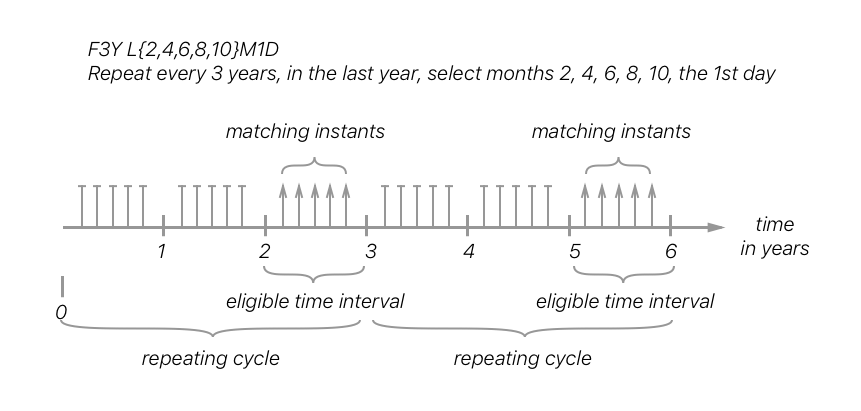
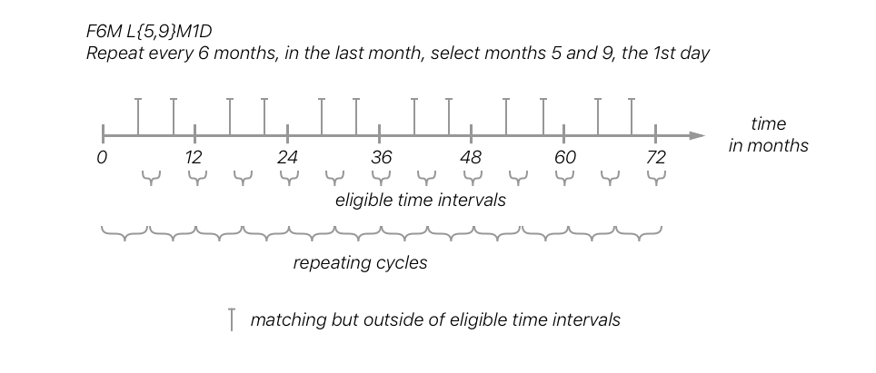
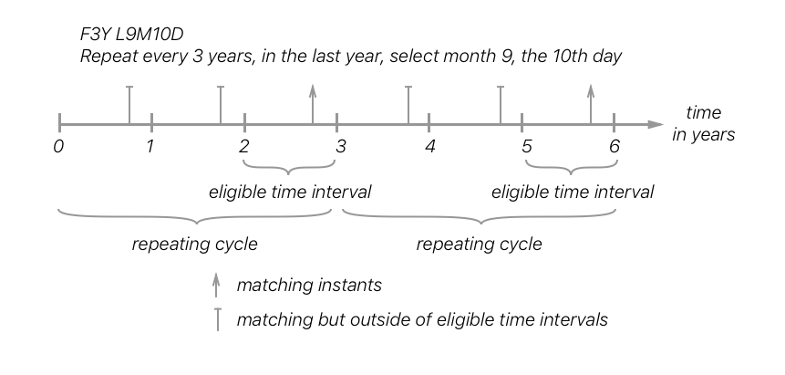
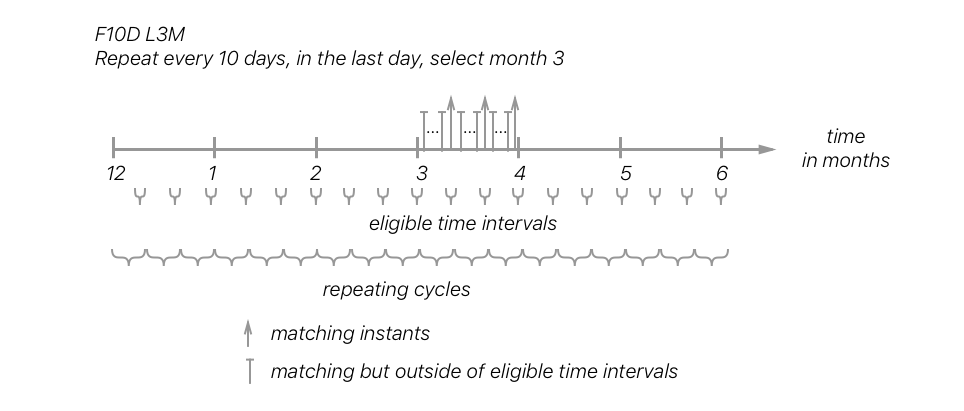

Foreword
The Calendaring and Scheduling Consortium ("CalConnect") is global non-profit organization with the aim to facilitate interoperability of technologies across user-centric systems and applications.
CalConnect works closely with liaison partners including international organizations such as ISO, OASIS and M3AAWG.
The procedures used to develop this document and those intended for its further maintenance are described in the CalConnect Directives.
In particular the different approval criteria needed for the different types of CalConnect documents should be noted. This document was drafted in accordance with the editorial rules of the CalConnect Directives.
Attention is drawn to the possibility that some of the elements of this document may be the subject of patent rights. CalConnect shall not be held responsible for identifying any or all such patent rights. Details of any patent rights identified during the development of the document will be in the Introduction and/or on the CalConnect list of patent declarations received (see www.calconnect.com/patents).
Any trade name used in this document is information given for the convenience of users and does not constitute an endorsement.
This document was prepared by Technical Committee VCARD.
Introduction
The iCalendar standard (RFC 5545:2018) has defined the de-facto standard for specifying recurring time intervals.
However, its syntax is tightly bound to the syntax and assumptions of RFC 5545:2018, requiring a data model representation that assumes a hierarchy of properties, parameters and data types that are not necessarily provided in other date and time representations, such as the International Standard for date and time representation, 8601:2004.
RFC 5545:2018 also relies on a number of indirect data inheritance rules that are not clearly specified and therefore not easily reproduced in other representations outside of iCalendar.
This document describes a method to specify recurring time intervals with repeat rules in representation in line with those of the time scale components and date and time representations described in 8601:2004.
Date and time — General recurrence syntax
1. Scope
The purpose of this document is to provide a standard representation of recurring time intervals with repeat rules in line with those of the time scale components and date and time representations described in 8601:2004, while maintaining compatibility with the recurrence rule syntax specified as "RECUR" rules in RFC 5545:2018.
The representations described in this document utilizes numbers, alphabets and symbols defined in 646. These representations are meant to be both human recognizable and machine readable.
2. Normative references
The following documents are referred to in the text in such a way that some or all of their content constitutes requirements of this document. For dated references, only the edition cited applies. For undated references, the latest edition of the referenced document (including any amendments) applies.
8601:2004, Data elements and interchange formats -- Information interchange -- Representation of dates and times
CC 18011:--, 1, Date and time — Explicit representation
3. Terms and definitions
For the purposes of this document, the terms and definitions given in CC 18011:-- and the following apply.
3.1. Terms and definitions
3.1.1
repeat rule
consists of a set of eligible time intervals (Clause 3.1.4) and selection rules (Clause 3.1.2) that allows computation of a set of matching instants (Clause 3.1.5)
3.1.2
selection rule
rule specifying restrictions on the value of a time scale component (ISO 8601-1:--, Clause 3.1.3.9)
3.1.3
repeat cycle
set of repeating instants (ISO 8601-1:--, Clause 3.1.1.2), calculated by a specified start instant and specified duration (ISO 8601-1:--, Clause 3.1.1.6) gap between the repeating instants
3.1.4
eligible time interval
time interval (ISO 8601-1:--, Clause 3.1.1.3) eligible for matching using selection rules (Clause 3.1.2)
3.1.5
matching instants
set of instants (ISO 8601-1:--), computed by a repeating rule (Clause 3.1.1), that belongs within eligible time intervals (Clause 3.1.4) and fulfills criteria set by specified selection rules (Clause 3.1.2)
3.2. Symbols
3.2.1
General
Representations and expressions specified in this document make use of the symbols listed in Clause 3.2.2 through Clause 3.2.6.
Representations (also referred to as "format representations") give rise to expressions for dates, times, intervals and recurring intervals.
To clearly separate date and time representations, from and the text, punctuation marks and associated symbols used to describe them, the following symbols are used to demarcate boundaries of expressions and representations in this document:
Quotation marks and brackets are not part of the expression or representation itself and must be omitted in implementation.
All characters used in date and time expressions and representations are part of the 646 repertoire, except for "hyphen", "minus" and "plus-minus". In an environment where use is made of a character repertoire based on 646, "hyphen" and "minus" should be both mapped onto "hyphen-minus".
The character "space" shall not be used in the expressions.
| EXAMPLE 1 |
[YYYY] is a format representation for a calendar year, where each Y is to be replaced by a single digit creating an expression, for example '1985'. |
| EXAMPLE 2 |
The date and time representation [YYYY]["-"][MM]["-"][DD] gives rise to the expression '2003-02-10' which identifies 10 February 2003. |
-
single quotation marks enclose expressions (for example '1985'); in some cases they are omitted to reflect the actualities of the examples;
-
all individual tokens that are part of a representation are contained between the open and close bracket symbols ("["` and "`]"), when used in a representation the bracket symbols are not part of any expression of that representation;
EXAMPLE For the date and time representation [YYYY]["-"][MM]["-"][DD], [YYYY], ["-"], [MM], ["-"], and [DD] are individual tokens enclosed by brackets.
-
when double quotations marks enclose a string within a representation, that string is a literal and becomes part of any expression of that representation.
EXAMPLE The representation [i]["Y"] represents a positive integer followed by the symbol "Y". '12Y' meaning "12 years" is an expression of that representation.
3.2.2
Time scale component symbols
The following time scale component symbols are in implied form, for the representation of date and time.
year
-
time scale component calendar year
month
-
time scale component calendar month
week
-
time scale component calendar week of year
day
-
time scale component calendar day of month
dayk
-
time scale component calendar day of week
dayo
-
time scale component calendar day of year
hour
-
time scale component clock hour
min
-
time scale component clock minute
sec
-
time scale component clock second
dec
-
time scale component decade
cent
-
time scale component century
3.2.3
Composite component symbols
selection
-
representation for a set of selection rules as determined in Clause 5.1
3.2.4
Symbols used in place of digits or signs
These symbols are used to represent characters in the date and time representations. They are used in representations only, and are replaced by one or more characters, as described, in expressions:
n
-
a positive integer or value, may be left absent to signify an unbounded value
i
-
a positive integer
!
-
indicates that the token following this symbol is optional (may be omitted)
3.2.5
Designator symbols
These symbols are used to represent designators in the date and time expressions:
"H"
-
the hour designator, represented by the character "H", preceding a data element which represents the number of hours
"M"
-
the month or minute designator, represented by the character "M", preceding a data element which represents the number of months or minutes
"P"
-
the duration designator, represented by the character "P", preceding the component which represents the duration
"R"
-
the recurring time interval designator, represented by the character "R"
"S"
-
the second designator, represented by the character "S", preceding a data element which represents the number of seconds
"T"
-
the time designator, represented by character "T", indicates:
-
the start of the representation of local time of day to designate local time of day expressions as such,
-
the start of the representation of the time of day in date and time of day expressions,
-
the start of the representation of the number of hours, minutes or seconds in expressions of duration
-
"Y"
-
the year designator, represented by the character "Y", preceding a data element which represents the number of years
"W"
-
the week designator, represented by the character "W", preceding a data element which represents the ordinal number of a calendar week within the calendar year
"K"
-
the calendar day of week designator, represented by the character "K", preceding a data element which represents the ordinal number of a calendar day within a calendar week
"O"
-
the calendar day of year designator, represented by the character "O", preceding a data element which represents the ordinal number of a calendar day within a calendar year
"Z"
-
the UTC designator, represented by the character "Z", added to the end of a time representation to indicate that a time of day is represented as UTC of day.
"I"
-
the instance designator, represented by the character "I", indicates that a specific instance is to be selected within the time scale component
"J"
-
the ordinal position designator, represented by the character "j", indicates that a specific ordinal position is to be selected from the existing value of the time scale component
"F"
-
the frequency designator, represented by the character "F", preceding the component which represents the frequency part of a repeating rule
"L"
-
the selection designator, represented by the character "L", preceding the component which represents the selection part of a repeating rule
- "x"
-
the representation of any character "x" as according to the textual representation of "x" in the 646 repertoire
3.2.6
Separator symbols
In date and time expressions and date and time representations, the following characters are used as separators.
"/" (solidus)
-
the "/" solidus character separates start and end times in the representation of a time interval, as well as the symbol 'R' from the remainder of a recurring time interval representation. A solidus may be replaced with a double hyphen ["--"] by mutual agreement of the communicating partners.
"." (period) and "," (comma)
-
the "." period and "," comma characters are decimal signs used to separate the integer part from the decimal fraction of a number.
4. Set notation
4.1. General
A set is considered to be an orderless collection of elements.
4.2. Integer set
Curly braces enclosing a set of integers (with no specified order and separated by commas and zero or more spaces) are used to mean "allmembers of the set".
Empty spaces ([" "]) after or before the element divider ([","]) within a set expression are considered superfluous and only allowed for better readability. The evaluation of a set expression should always omit such empty spaces.
intset = ["{"][intexpr-1][","][intexpr-2][","] ... [intexpr-n]["}"]
Where,
-
intexpr-i is [i] (a positive integer) or [!]["-"][i] (a negative integer)
| EXAMPLE 1 |
{1, 3, 5} is a set of integers 1, 3 and 5. |
| EXAMPLE 2 |
{-3, -6, 9} is a set of integers -3, -6 and 9. |
4.3. Date and time expression set
The notation form specified in Clause 4.2 also applies to a set of date and time expressions.
exprset = ["{"][expr-1][","][expr-2][","] ... [expr-n]["}"]
Where,
-
[expr-i] is a valid date and time expression
| EXAMPLE |
{1K,3K,5K} is a set that contains the expressions for Monday, Wednesday and Friday. |
4.4. Integer set expansion for date and time expressions
An integer set [intset] can replace a time component value [i] in a representation as long as the resulting expression is valid.
intexpand = [intset][symbol(c)]
Where,
-
[symbol(c)] is the designated symbol for the time scale component.
| EXAMPLE 1 |
If c is the timescale component "month", [symbol(month)] is the symbol for the calendar month time scale component — the designated symbol ["M"]. |
| EXAMPLE 2 |
{1,2,3}K is a set that expands to {1K,2K,3K}, which contains the expressions to specify Monday, Wednesday and Friday. |
| EXAMPLE 3 |
2018YGP2M{1,3,5}I expresses a shorter form of the set representation of { 2018Y1M1D/2018Y2M28D, 2018Y5M1D/2018Y6M30D, 2018Y9M1D/2018Y10M31D } that uses time intervals from CC 18011:--. |
4.5. Expression set expansion for date and time expressions
An expression set [exprset] can be expanded with another date and time expression as long as the resulting expression is valid.
exprexpand = [exprset][expr]
Where,
-
[expr] is a date time expression, such that when conjoined with individual elements of [exprset] the resulting expanded set of date and time expressions remain valid.
| EXAMPLE 1 |
{2018Y3M,2019Y2M}1D is a set that expands to {2018Y3M1D,2019Y2M1D}, which contains the date expressions for year 2018 March 1st and year 2019 February 1st. |
| EXAMPLE 2 |
{1778Y3M,1889Y2M}{10,20}D utilizes the syntax of Clause 4.4 and Clause 4.5, where the set expands to {1778Y3M10D,1889Y2M10D,1778Y3M20D,1889Y2M20D}. Since the order of elements are not specified within a set, the expression is equivalent to {1778Y3M10D,1778Y3M20D,1889Y2M10D,1889Y2M20D}. |
5. Selection of date and time
5.1. General
A time scale component can be replaced with selection rules to specify matching criteria of certain time scale unit values. This clause builds upon the "explicit" syntax of time scale components specified in CC 18011:--.
[selection] may include zero or more selection rules.
selection = [selection-rule-1]...[selection-rule-n]
Generally, selection rules should be placed in the order where the higher-order time scale components are placed on the left, and the lower-order ones placed on the right.
While it is possible to translate the selection rules specified in this document to the "RECUR" syntax specified in RFC 5545:2018 in most cases; exceptions and limitations are noted within context of the rules specified below.
5.2. Selection of calendar months
This selection rule specifies a set of calendar months of the calendar year.
Representation:
monthSR = [monthE]
Valid values are [1] to [12], corresponding to the ordinal number of the calendar month.
| EXAMPLE |
3M represents the third calendar month of the calendar year, i.e. March. |
5.3. Selection of calendar weeks
This selection rule specifies a set of ordinals specifying calendar weeks of the calendar year.
Representation:
weekSR = [weekE]
Valid values are [1] to [53] and [-53] to [-1]. This corresponds to the number of calendar weeks of a year according to week numbering as defined in ISO 8601-1:--.
This rule should only be specified when the frequency of the repeat rule is set to yearly (Clause 6.3.2, a)).
| EXAMPLE |
The third week of the calendar year is represented by the expression 3W in this part. |
NOTE 1 Week 53 can only occur when Thursday is January 1 or if it is a leap calendar year and Wednesday is January 1, in accordance with ISO 8601-1:--, Clause 4.2.2.
NOTE 2 Refer to CC 18011:--, Clause 6.7 for negative values of weeks.
NOTE 3 Definitions of the calendar week and the week number are provided in ISO 8601-1:--.
5.4. Selection of calendar month days
This selection rule specifies a set of days of the calendar month.
Representation:
daySR = [dayE]
Valid values are [1] to [31] and [-31] to [-1]. This corresponds to the maximum number of calendar days of a calendar month.
| EXAMPLE |
-10D represents the tenth to the last calendar day of the calendar month. |
When the frequency part is set to weekly (Clause 6.3.2, c)), this selection rule must not be specified.
5.5. Selection of week days
This selection rule specifies a set of days of the week.
Representation:
daykSR = [daykE]
Valid values are [1] to [7].
| EXAMPLE |
Within a monthly rule, "1K" represents all Mondays within the calendar month. |
5.6. Selection of calendar week days with position
This selection rule indicates the n-th occurrence of a specific week day within a yearly (Clause 6.3.2, a)) or monthly (Clause 6.3.2, b)) intervals.
Representation:
daykR = [!]["`-`"][i]["`J`"][daykE]
This representation should be used only with repeating rules with intervals of a higher order time scale unit than "week", such as "yearly" or "monthly". Valid values of [i] range from [1] to [53] and [-53] to [-1].
The numeric value [i] in this rule corresponds to an offset within a given scope:
-
when the frequency is yearly, and when there is a rule for selection of calendar month, then the offset corresponds to an offset within the calendar month specified in the selection of month rule;
-
when there is a rule for selection of week or for selection of calendar month, then the offset corresponds to an offset within the calendar year.
| EXAMPLE 1 |
When specified in a monthly context, +1j1K represents the first Monday within the calendar month, whereas {1,-2}j1K represents the first and the second last Monday of the calendar month. |
| EXAMPLE 2 |
When specified in a yearly context, +52j1K represents the 52th Monday within the calendar year, whereas -21j1K represents the 21st Monday counted from the last week of the calendar year. |
5.7. Selection of ordinal days in calendar year
This selection rule specifies a set of ordinal days of the calendar year, and should only be specified when the interval of the repeat rule is set to yearly (Clause 6.3.2, a)), monthly (Clause 6.3.2, b)) or daily (Clause 6.3.2, d)).
Representation:
dayoSR = [dayoE(m)]
Valid values are [1] to [366] and [–366] to [-1].
NOTE The values of [366] and [-366] are used to match a calendar leap year
| EXAMPLE 1 |
-1 represents the last day of the calendar year (December 31st) |
| EXAMPLE 2 |
-306 represents the 306th to the last day of the calendar year (March 1st) |
5.8. Selection of hours
This selection rule specifies a set of hours of the calendar day.
Representation:
hourSR = [hourE]
Valid values are [0] to [23].
5.9. Selection of minutes
This selection rule specifies a set of minutes within an hour.
Representation:
minSR = [minE]
Valid values are [0] to [59].
5.10. Selection of seconds
This selection rule specifies a set of seconds within a minute.
Representation:
secSR = [secE]
Valid values are [0] to [60].
NOTE 1 The value of [60] is used to match a leap second of the calendar year.
NOTE 2 The value of [60] should be changed to [59] when converting such rule that to the RFC 5545:2018 BYSECOND since the BYSECOND syntax does not support a value of [60].
5.11. Selection of position
The positional part is an optional part in a selection rule.
It specifies a set of values that corresponds to the n-th occurrence within selected occurrences. Particularly, it operates on a set of recurrence instances in one interval of the repeating rule.
A set of recurrence instances starts at the beginning of the interval defined by the frequency part.
The selection of position should only be used when there is at least one selection rule is specified.
Representation:
positionSR = [position]["`I`"]
Where,
position = [!]["`-`"][i]
Each [position] value can include a positive (+n) or negative (-n) integer. Valid values for [position] are therefore unbounded, except for the integer value [0], which is not accepted.
Position numbers within a set of occurrences is considered to start with [1] (the first occurence of the set of occurrences), and [-1] represents the first occurence when counted backwards.
| EXAMPLE 1 |
In a repeating rule with a weekly frequency, the interval would be one week. |
| EXAMPLE 2 |
"The last work day of calendar months" can be represented by the repeating rule F1ML{1,2,3,4,5}K-1I (using notation specified in Clause 4) |
6. Recurring time intervals with repeat rules
6.1. General
This clause extends ISO 8601-1:--, Clause 5.4 "Recurring Time Interval", by adding a rule part that defines the repeat pattern. The rule part is appended to the recurring time interval structure.
The repeat rule syntax described in this clause is interchangeable with the syntax specified in IETF RFC 5545:2018, and is dependent on the the requirements of Clause 5.
6.2. Method of specification
A recurring time interval is represented as follows:
-
Optionally, a number of occurrences. If absent, the number of occurrences is unbounded. Each occurrence is called an "event".
-
Followed by a time interval, as specified in CC 18011:--, Clause 6.6.
-
Followed by a repeat rule.
6.3. Repeat rule
6.3.1. General
A repeat rule identifies a set of matching instants according to specification of a repeating cycle used together with selection rules.
repeat-rule = ["`F`"][eligible-time-intervals]["`L`"][selection-rules]
The frequency designator ["F"] precedes the identification of a series of repeating time intervals ("repeating intervals"). Within each repeating interval, one sub-interval is distinguished, called an "eligible time interval".
6.3.2. Eligible time intervals
Within each eligible time interval, one or more events occur, as determined by [selection-rules], which are optional.
If [selection-rules] is omitted, a single event occurs at the end of the eligible time interval.
[eligible-time-intervals] in the repeat rule above is one of the following:
-
Time interval of one or more years: [yearE]
-
Time interval of one or more months: [monthE]
-
Time interval of one or more weeks: [weekE]
-
Time interval of one or more days: [dayE]
-
Time interval of one or more hours: [hourE]
-
Time interval of one or more minutes: [minE]
-
Time interval of one or seconds: [secE]
-
The duration of each repeating interval is the value of [eligible-time-intervals].
-
| EXAMPLE 1 |
If the value of [eligible-time-intervals] is 8Y, the length of each repeating time interval is 8 years. |
-
The duration of each eligible time interval is one-unit of the chosen time scale component in which the duration of [eligible-time-intervals] is expressed.
| EXAMPLE 2 |
If the value of [eligible-time-intervals] is 8Y, then the time scale component is year, there are eight eligible intervals, each of length 1 year. |
-
Each eligible time interval begins x-1 units of the selected time scale component following the beginning of its repeating interval, where x is the coefficient of the unit.
| EXAMPLE 3 |
If the value of [eligible-time-intervals] is 8Y, the eligible time interval is the 7th year within the 8-year repeating interval. |
| EXAMPLE 4 |
The expression F2Y in the frequency part means that the eligible periods are the second year of each 2-year repeating interval. |
| EXAMPLE 5 |
The expression F8D in the frequency part means that the eligible periods are the 8th day of each 8-day interval. |
6.3.3. Selection part
The selection designator ["L"] identifies a list of selection rules, which specify conditions of matching one or more instants within one or more time intervals.
selection-rules = ["`L`"][selection-rule-1]...[selection-rule-n]
Representations for selection rules are specified in Clause 5.
In a repeating rule, if the selection part is present but does not specify selection rules for all time scale components provided in the "time interval start", all lower order values from "time intervalstart" value should be used to fill in the missing component values in the selection part.
| EXAMPLE |
When the selection part L3DT is used with the time interval start value 2018-08-01T01:02:03, the selection part is treated as L3D F1DL1M reduces the number of repeat instances from all days (when the selection rule was not specified) to all days in January. |
For a detailed explanation of interactions between eligible time intervals and the selection part, please refer to Appendix A.
For issues dealing with compatibility with RFC 5545:2018, please refer to Appendix B.
6.4. Complete representations
6.4.1. General
A complete representation of a recurring time interval with repeat rules, shall be in accordance with Clause 5 and Clause 6.3, combining any complete recurring time interval representation as defined in ISO 8601-1:--, Clause 5.4.3 with the repeat rule.
A recurring time interval is expressed according to the following representation:
["`R`"][n]["`/`"][time-interval]["`/`"][repeat-rule]
Where,
-
["R"] is the recurring time interval designator;
-
[n] is the number of recurrences (optional);
-
[time-interval] is a valid time interval;
-
[repeat-rule] is a repeat rule defined in Clause 6.3.
6.4.2. Basic formats
The basic format time interval is specified as [timeInterval] of one of these three representations described in ISO 8601-1:--:
-
[date]["T"][time]["/"][date]["T"][time]
-
[date]["T"][time]["/"][duration]
-
[duration]["/"][date]["T"][time]
The representation of a basic format recurring time interval is therefore:
["`R`"][n]["`/`"][timeInterval]["`/`"][repeat-rule]
| EXAMPLE 1 |
R12/20150929T140000/20150929T153000/F2W is of the first form |
| EXAMPLE 2 |
R12/20150929T140000/P1H30M0S/F2W is of the second form |
| EXAMPLE 3 |
R12/P2H30M0S/20150929T153000/F2W is of the third form |
6.4.3. Extended formats
The extended format time interval is specified as [timeIntervalX] of one of these three representations described in ISO 8601-1:--:
-
[dateI]["T"][timeI]["/"][dateI]["T"][timeI]
-
[dateI]["T"][timeI]["/"][duration-complete]
-
[duration-complete]["/"][dateI]["T"][timeI]
The representation of a basic format recurring time interval is therefore:
["`R`"][n]["`/`"][timeIntervalX]["`/`"][repeat-rule]
| EXAMPLE 1 |
R12/2015‑09‑29T14:00:00/2015‑09‑29T15:30:00/F2W is of the first form |
| EXAMPLE 2 |
R12/2015‑09‑29T14:00:00/P1H30M0S/F2W is of the second form |
| EXAMPLE 3 |
R12/P1H30M0S/2015‑09‑29T15:30:00/F2W is of the third form |
6.4.4. Explicit formats
The explicit format time interval is specified as [timeIntervalE] (see CC 18011:--), the representation of a basic format recurring time interval is therefore:
["`R`"][n]["`/`"][timeIntervalE]["`/`"][repeat-rule]
| EXAMPLE 1 |
R12/2015Y9M29DT14H0M0S/2015Y9M29DT15H30M00S/F2W is of the first form |
| EXAMPLE 2 |
R12/2015Y9M29DT14H0M0S/P1H30M0S/F2W is of the second form |
| EXAMPLE 3 |
R12/P1H30M0S/2015Y9M29DT15H30M00S/F2W is of the third form |
6.5. Representations other than complete
A representation other than complete of a recurring time interval with repeat rule shall be an expression in accordance with Clause 5 and Clause 6.3, where the time interval is represented in accordance with ISO 8601-1:--, Clause 4.4.5.
6.6. Time scale unit precision
The resulting occurrences of a repeat rule after evaluation will use a time scale unit resolution equal to the lowest order time scale unit specified in the repeat rule.
| EXAMPLE 1 |
In the expression R/2018Y1M/P1M/F3M, the lowest order time scale unit specified is month, hence the resolution is month precision. This expression resolves to the set { 2018-01/2018-02, 2018-04/2018-05 … } |
| EXAMPLE 2 |
In the expression R/2018Y1M1D/P1D/F3M, the lowest order time scale unit specified is day, hence the resolution is day precision. This expression resolves to the set { 2018-01-01/2018-01-02, 2018-04-01/2018-04-02 … } |
| EXAMPLE 3 |
In the expression R/2018Y1M/PT10M/F1M, the lowest order time scale unit specified is minute, hence the resolution is minute precision. This expression resolves to the set { 2018-01-01T00:00/2018-01-01T00:10, 2018-02-01T00:00/2018-02-01T00:10, … } |
6.7. Evaluation of a repeat rule
A repeat rule specifies a set of occurrences where each occurrence is a time interval.
The resulting occurrences of a repeat rule are calculated by the following steps:
-
enumerate all eligible time intervals;
-
apply all selection rules to the eligible time intervals; and
-
obtain the overlapping instants specified by both the eligible time intervals and the selection rules.
The resulting overlapping instants are the occurrences specified by evaluating the repeat rule.
Appendix A (informative) Interactions between eligible time intervals with the selection part
A.1. General
The interaction between eligible time intervals and selection rules specified within a repeating rule give rise to interesting properties that users should be aware of.
A.2. Sample evaluation of a recurring interval
R/20150104T083000/PT15M00S/F2YL1M1KT{8,9}H30M expresses a recurring interval (number of occurrences is unspecified) whose first occurrence is January 4, 2015, 8:30-8:45 AM, and subsequent occurrences, all of the same duration (15 minutes), are determined by the repeat cycle for which the following evaluation sequence is provided.
-
the character F indicates that the formula for determining eligible time intervals follows;
-
the expression 2Y indicates that the eligible time intervals have a repeating cycle of two years, and each eligible time interval is 1 year in length, the second year within its repeating interval;
-
From this information together with the specification of the first occurrence, it is calculated that:
-
the first eligible time interval is the calendar year 2015 (the year during which the first occurrence takes place)
-
the first repeating interval is the two-year period comprising calendar years 2014 and 2015;
-
-
the subsequent recurring intervals are then determined by the selection part;
-
the character L indicates that selection parts follow;
-
the expression 1M indicates that the matching occurrences are limited to January only;
-
the expression 1K indicates that the matching occurrences are limited to Sundays only;
-
the expression T indicates that intraday time scale components follow;
-
the expression {8,9}H indicates that the matching occurrences have clock hours 8 or 9;
-
the expression 30M indicates that the matching occurrences have a clock minute value of 30, combined with specified clock hours, the starting times are determined to be 8:30AM and 9:30 AM;
-
since the selection rules lacks specified values for clock seconds, in accordance with 9.3.3, they should be obtained from the clock seconds value of the "time interval start" of 20150104T083000, hence the clock seconds selection rule is specified as value 00;
-
the recurrent occurrences therefore resolve to the rule "in the lastyear of every two years, for every Sunday in January at both 8:30:00 AMand 9:30:00 AM, create a 15 minutes event."
-

Figure A.1 — Resulting occurrences of the rule F3YL{2,4,6,8,10}M1D
Figure A.1 demonstrates that the repeating cycle denotes how often the eligible time intervals be evaluated. Within the eligible time intervals, the selection rules are applied. It is the overlap between the selection rules and eligible time intervals that produce the resulting occurrences.
A.3. Special case when the repeating cycle uses value 1
When the repeating cycle is defined with a value 1 for any time unit (e.g. calendar year, calendar month, calendar day, calendar hour, etc.), the effect on the resulting occurrences are identical – the repeating cycle fully covers all instants of the time scale. Therefore, the resulting occurrences are fully described by the selection rules that apply.
A.4. Orders of the repeating cycle and selection rules
A.4.1. Repeating cycle of higher order than selection rules
It is common in natural expressions and in calendar implementations that the repeating cycle uses a time scale unit of a higher order than that of the selection rules. The resulting occurrences are generally as expected by the creator of these rules.
| EXAMPLE |
Figure A.2 provides such a case; where the resulting occurrences happen once every three years, matching a single date of September 10th. |

Figure A.2 — When the repeating cycle is of a higher order than the selection part
A.4.2. Repeating cycle of same order with selection rules
When a time scale unit of the same order is used for both the repeating cycle and the selection rules, the following properties arise:
-
The effect of Appendix A.3 applies;
| EXAMPLE 1 |
A repeating rule of 1 month repeating cycle, with selection rules that are of the highest order of "month", has the same effect as the repeating cycle of 1 calendar year because every calendar month in the calendar year will be evaluated |
-
A repeating rule with an n time unit repeating cycle, matched with selection rules of the same time unit, will provide occurrences that depend on the start instant of the repeating cycle.
| EXAMPLE 2 |
A repeating cycle starting in April every 6 months will only match a monthly selection rule that contains April or October |
| EXAMPLE 3 |
Figure A.3 demonstrates an instance of the second case where the repeating cycle does not overlap with eligible time intervals, resulting in no occurrences. |

Figure A.3 — When the repeating cycle is of the same order as the selection part and mismatches
A.4.3. Repeating cycle of lower order than selection rules
When a time scale unit of a lower order is used for the repeating cycle than that of the selection rules, the following should be of note:
-
The effect of Appendix A.3 applies;
-
A repeating rule with an n time unit repeating cycle, matched with selection rules of a lower order time unit, will provide occurrences that depend on the start instant of the repeating cycle.
| EXAMPLE |
Figure A.4 demonstrates this interaction of the second case, where the repeating cycle is of day order and a selection rule of calendar month order. Notice that there are no matches outside calendar month 3 due to the application of the selection rule. |

Figure A.4 — When the repeating cycle is of a lower order than the selection part
Appendix B (informative) Compatibility considerations of repeat rules with RFC 5545 recurrences
B.1. Evaluation of repeat rules
In this document, the evaluation of repeat rules (see Clause 6.3) rely on explicit specification of selection rules (see Clause 5) and the direct inheritance of time scale component information from the initial start date.
B.2. Inheritance of time scale component information
In the evaluation of repeat rules within this document as well as in RFC 5545:2018, a number of time scale components can be directly inherited from the initial start date.
In terms of RFC 5545:2018 specifically:
-
when the FREQ parameter is set to SECONDLY, but without a BYSECOND parameter, the BYSECOND selection is directly inherited from the clock seconds value from the initial start date;
-
when the FREQ parameter is set to MINUTELY, but without a BYMINUTE parameter, the BYMINUTE selection is directly inherited from the clock minutes value from the initial start date;
-
when the FREQ parameter is set to HOURLY, but without a BYHOUR parameter, the BYHOUR selection is directly inherited from the clock hours value from the initial start date.
B.3. Implicit selection rules of RFC 5545
In RFC 5545:2018, however, the evaluation of certain repeat rules also relies on implicit selection rules inherited indirectly from the initial start date.
Specifically,
-
when the FREQ parameter is set to WEEKLY, but without a BYDAY parameter, the BYDAY selection is inherited from the calendar day of week value from the initial start date (note that the calendar day of week value is not directly specified in the initial start date, but it has to be inferred);
-
when the FREQ parameter is set to MONTHLY, but without both`BYMONTHDAY and BYDAY parameters, the BYMONTHDAY selection is inherited from the calendar month of year value from the initial start date;
-
when the FREQ parameter is set to YEARLY but without a BYYEARDAY parameter,
-
if no BYMONTH or BYWEEKNO parameter is set:
-
if the BYMONTHDAY parameter is provided, then the BYMONTH selection is inherited from the calendar month of year value from the initial start date;
-
if the BYDAY parameter is not set, then the BYMONTH selection is inherited from the calendar month of year value from the initial start date;
-
-
if no BYMONTHDAY, BYWEEKNO or BYDAY parameter is set, the BYMONTHDAY selection is inherited from calendar day of month of the initial start date;
-
if there is a BYWEEKNO parameter set but no BYMONTHDAY or BYDAY, the BYDAY selection is inherited from the calendar day of week of the initial start date.
-
| EXAMPLE |
In evaluating a simplified example expression from RFC 5545:2018, with DTSTART set to 19970902T090000 and RRULE set to FREQ=WEEKLY;INTERVAL=2, will result in the instance series of "1997September 2, 16, 30; October 14…". This resulting instance series relies on an implicit understanding that FREQ=WEEKLY always requires selection of the BYDAY parameter, which is not specified in the original selection rule. In this case, BYDAY is implicitly set to Tuesdays as originally obtained from the DTSTART value being a Tuesday. |
B.4. Achieving equivalent selection criteria in RFC 5545 syntax
Using mechanisms described in this document, implicit selection rules are not allowed. In order to convert a RFC 5545:2018 recurrence rule into a repeat rule specified by Clause 6.3, the implicit selection rules based on indirect inheritance must be made into explicit selection rules.
| EXAMPLE |
Following the example in Appendix B.3, the value of Tuesday is considered to be indirectly inferred from the initial start date since it is not explicitly specified. To achieve the same effect using mechanisms of this document, the BYDAY selection rule in RFC 5545:2018 must be explicitly set as a selection rule, such as in L1K. |
Appendix C (informative) Ambiguities inherent in exact duration calculations
C.1. General
The exact duration between two instants on a time scale depends on the time scale used and is dependent on where these marks occur.
In a Gregorian calendar, for example, a calendar month can have a duration of 28, 29, 30, or 31 days depending on the month and whether the year is a leap year. Given UTC depends on the leap second mechanism for synchronicity with UT1, in a 24-hour clock, the last clock minute of the year may have a duration of 59, 60, or 61 seconds.
These examples demonstrate that time scales can be disjoint by nature. For example, a Gregorian calendar only contains the "instant" February 29 on a leap year. A time shift change can also cause a rift in the time scale, such as on the application or revocation of daylight savings time, where the instants are relabeled in bulk.
The calculation of exact duration poses a problem for recurring instances.
For example,
-
A repeating rule that repeats every year starts on February 29. Should the next instance be February 29 of the next leap year, or February 28 of the next year?
-
July 31 is to be incremented by one month. Should the result be August 30 (30 days from July 31) or September 1 (31 days from July 31)?
This section explains the cause of ambiguity and provides guidelines as well as an algorithm for resolution.
C.2. Cause of ambiguity
The overflow of time scale component values occurs, when the duration specifies a value increment of a higher order time scale component, but this higher order time scale component does not have the corresponding mark in its lower order time scale.
C.3. Guidelines for expressing ambiguous recurring instances
Before an ambiguous recurrent expression is created, the creator of such recurring interval rule should be acutely aware of the options available for specifying the actual intent.
For example, a monthly recurring rule starting on February 28, could represent the following intentions:
-
to point to the 28th calendar day of month of every month;
-
to point to the last calendar day of every month (such as, when February 28th is the last day of the specified starting month); or
-
to point to the second-last calendar day of every month (such as, when February 29th is the last day of the specified starting month).
In case where the creator of such rule could react using an interact interface, the creator (or user) could specify his or her intention of such a rule and therefore produce a recurring interval rule that does not succumb to ambiguity described in this section.
C.4. Algorithm to resolve overflows
C.4.1. General
This section provides an algorithm that calculates a consistent date given an origin date (date) and a duration time scale component (duration) to apply. This algorithm is noted as resolve(date, duration) or "date + duration" in the text below.
C.4.2. Prerequisites
An overflow is defined as number exceeding the maximum value accepted by the time scale component. For example, an increase of P1M (duration) to 2018Y12M (date) will result in the expression 2018Y13M, where the month component is overflowed with value 13.
An overflow is considered resolved once the overflowed time scale unit has transferred its excess to the immediate higher order time scale component. For example, the overflowed expression 2018Y13M is resolved to 2019Y1M.
An overflow can cause multiple carry-overs when the overflow not only causes the immediate higher order time scale component to overflow, but also subsequent higher order components. For example, the overflowed expression 2018Y12M366D can be resolved to 2018Y24M1D (which still contains an overflow), can be resolved to 2019Y12M1D (where there is no more overflow).
-
Split duration according to its time scale components, obtaining a set of split duration elements duration_i, where each element is of a different time scale unit called unit_i for order i (the highest order time scale unit is denoted as unit_max, the lowest order time scale unit is denoted as unit_min).
-
Starting from the value of the lowest order time scale unit unit_min to the highest order unit unit_max, consider each duration_i of unit_i:
Increment date with duration_i
EXAMPLE 1 Given a duration P2M to be incremented on a date 2018Y1M, the resulting expression is 2018Y3M.
EXAMPLE 2 Given a duration P2M1DT3H to be incremented on a date, first increment the date with PT3H, then with P1D, at last with P2M.
-
If the time scale component at unit_i of date is overflowed due to the increase of duration_i (which is also of the same order), resolve by performing the following:
-
Carry the overflowed excess of the value at unit_i to the immediate higher order time scale component, and reset unit_i. Repeat this step with unit_{i+1} until there is no more overflow at time scale components from unit_i to unit_max.
-
If a time scale unit in date of a lower order than unit_i has overflowed, truncate that overflow to the maximum valid value. Repeat this step with unit_{i-1} until there is no more overflow at time scale components from unit_i to unit_min.
-
| EXAMPLE 3 |
To increment a duration of P1M on a date, first resolve overflows at the month unit via carry (which may carry over to the year unit, the immediate higher order unit), then resolve overflows at the day unit via truncate (which may cause reduction in days, the immediate lower order unit of the month unit). |
The rule for resolving a lower order unit is demonstrated in detail in Appendix C.4.3, Example 10.
C.4.3. Algorithm demonstration
| EXAMPLE 1 |
("2018-01-23" + "P1M") resolves to "2018-02-23". There was no overflow to be resolved. |
| EXAMPLE 2 |
Incrementing "2018-12-01" by "P1M" gives "2018-13-01". The month component has overflowed (13 > 12) and according to the resolve process, the excess should be carried to year, and the month should be reset. Results in "2019-01-01". |
| EXAMPLE 3 |
Incrementing "2018-01-31" with "P1M" gives "2018-02-31". The month component has no overflow but the day component has. Since the day component is of a lower order, the day component is resolved by truncation considering "MM-DD", "`02-31" is truncated to "02-28", as 2018 Feb has only 28 days. Results in "2018-02-28". |
| EXAMPLE 4 |
Incrementing "2018-01-23" with "P2M2D" is calculated as ("2018-01-23" + "P2D") + "P2M". The next step becomes "2018-01-25" + "P2M" and results in "2018-03-25". |
| EXAMPLE 5 |
Incrementing "2018-01-31" with "P2M2D" is calculated as ("2018-01-31" + "P2D") + "P2M". The next step gives "2018-01-33" + "P2M", then "2018-02-02" + "P2M`", and finally "2018-04-02". |
| EXAMPLE 6 |
Incrementing "2018-01-29" with "P1M2D" is calculated as ("2018-01-29" + "P2D") + "P1M". The next step gives "2018-01-31" + "P2M", which results in "2018-02-31", and is resolved to "2018-02-28" via lower order truncation. |
| EXAMPLE 7 |
Incrementing "2018-01-29" with "P2M4D" is calculated as ("2018-01-29" + "P4D") + "P2M". The next step gives "2018-01-33" + "P2M", resulting in "2018-02-02" + "P2M" and finally "2018-04-02". |
| EXAMPLE 8 |
Incrementing "2018-12-01" with "P2M2D" is calculated as ("2018-12-01" + "P2D") + "P2M". Calculation gives "2018-12-03" + "P2M" and then "2018-14-02", which is finally resolved to be "2019-02-02" via carry over. |
| EXAMPLE 9 |
Incrementing "2018-12-31" with "P2M" results in "2018-14-31", which has to be resolved via carry over to "2019-02-31", and finally resolved via truncation to "2019-02-28". |
| EXAMPLE 10 |
Incrementing "2018-12-31" with "P5Y3M1D" results in (("2018-12-31" + "P1D") + "P3M") + "P5Y". It is calculated to be ("2018-12-32" + "P3M") + "P5Y "`, which is then resolved to ("`2019-01-01" + "P3M") + "P5Y" via carry over, and it becomes "2019-04-01" + "P5Y" and finally "2024-04-01". |
C.5. Resolution of leap seconds
There is no universal rule to calculate leap seconds in advance, since the decision to insert a leap second is driven by a number of dynamic factors and only known when announced by the BIPM.
For example, it is unclear whether 2085 will or will not have a leap second until a closer date, when BIPM makes such an announcement.
To resolve issues that relate to the leap second, in calculations prior to knowledge of the leap second, we assume that no leap second will be in place. Such that, "59" is always the last second of the year.
| EXAMPLE 1 |
"2018-12-31T23:59:59" + PT1M ⇒ "2018-12-31T23:60:59" ⇒ "2018-12-31T24:00:59" ⇒ "2018-12-32T00:00:59" ⇒ "2018-13-01T00:00:59" ⇒ "2019-01-01T00:00:59" (applies identically with or without leap second) |
| EXAMPLE 2 |
(at a leap second) "2018-12-31T23:59:60" + PT1M ⇒ (resolve minutes unit first) "2018-12-31T23:60:60" ⇒ "2018-12-31T24:00:60" ⇒ "2018-12-32T00:00:60" ⇒ "2018-13-01T00:00:60" ⇒ "2019-01-01T00:00:60" ⇒ (resolve seconds unit) "2019-01-01T00:00:59" |
| EXAMPLE 3 |
(when a year has a leap second) "2018-12-31T23:59:59" + PT1S ⇒ "`2018-12-31T23:59:60" |
C.6. Handling duration with fractions
It is not always clear what a duration with fractional numbers mean. For example, the expression "P0.5M" ("half a month") is ambiguous because the exact duration of a calendar month depends on its context and that the context for which "P0.5M" is anchored to is unclear.
The cause of this uncertainty is due to the ambiguity of duration of a time scale component. Generally, the exact duration of a calendar month is context-dependent, but that of a calendar day is not. The strategy is to calculate the fractional duration after knowing the exact duration of the unit, such that, the exact duration for the duration unit in whole (e.g. "P1M") can be calculated given a context.
The algorithm from Appendix C.4 can be used to first calculate the exact duration of the next whole duration of the fractional duration, and subsequently the fractional duration can be calculated.
Let the functions:
-
unit(duration) be the value of a single unit used in the duration;
-
value(duration) be the fractional value used with the duration.
-
duration(date1, date2) is the function to calculate the duration between two dates or times.
The calculation of a "date + duration" can be rephrased into:
date + duration = duration(resolve(date, unit(duration))), date) × value(duration) + date
Given that "resolve(date, unit(duration))" can be calculated, this formula will always produce a value with consistency.
| EXAMPLE |
Given the increment of "2018-01-23" with "P0.5M", it can be rephrased as duration(resolve("2018-01-23", "P1M"), "2018-01-23") × 0.5 + "2018-01-23". It is reduced to duration( "2018-02-23", "2018-01-23") and then "P31D" × 0.5 + "2018-01-23", and hence "P15.5D" + "2018-01-23". Since "P15.5D" is an exact duration, "P15.5D" + "2018-01-23" is resolvable and gives us the final result as "2018-02-07T12:00:00`". |
Bibliography
[1] 646, Information technology -- ISO 7-bit coded character set for information interchange
[2] ISO 8601-1, Date and time — Representation for information interchange — Part 1: Basic rules
[3] RFC 5545, Internet Calendaring and Scheduling Core Object Specification (iCalendar)